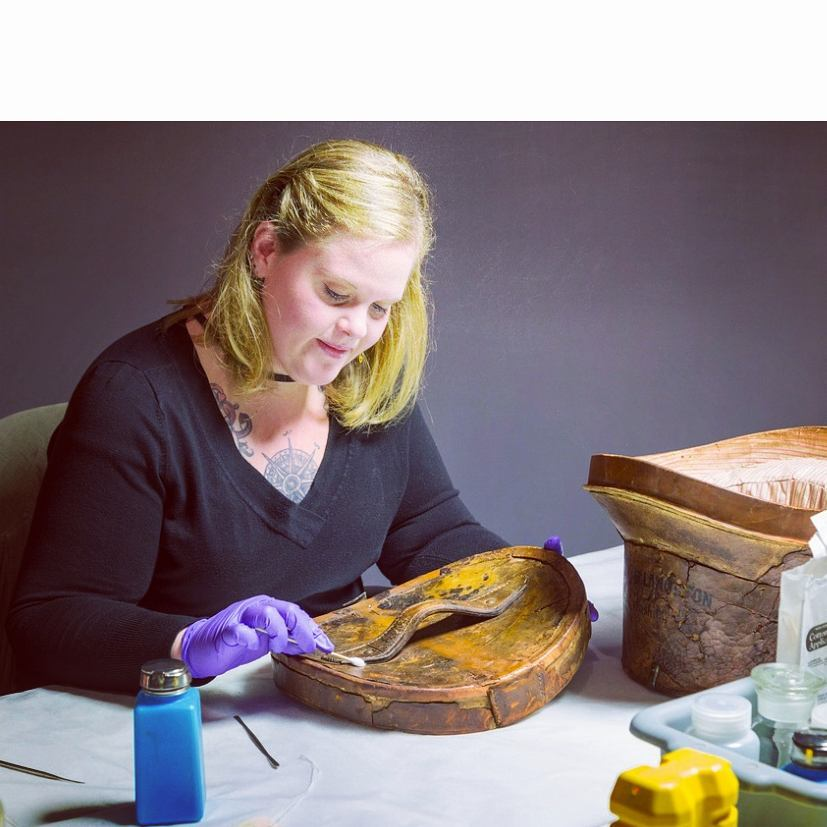

Karla Dayhoff is a trained conservator of museum and archaeological objects. She received her undergraduate education a Metropolitan State University of Denver, graduating Summa Cum Laude with a BA in History and a minor in Fine Arts.
Karla then went on to study Conservation of Museum and Archaeological Objects at Durham University in Durham, England. After graduating in 2016, she moved to Nashville, Tennessee to help open the new Tennessee State Musuem as an Assistant Conservator. Currently, Karla is studying to become a web developer through Vanderbilt University, with an emphasis in MERN languages.